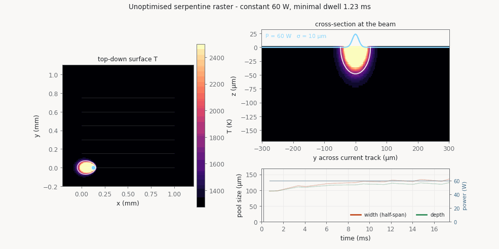
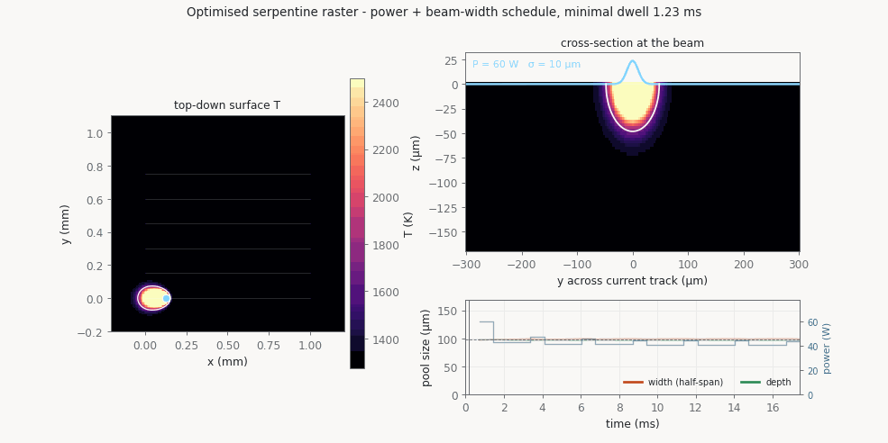
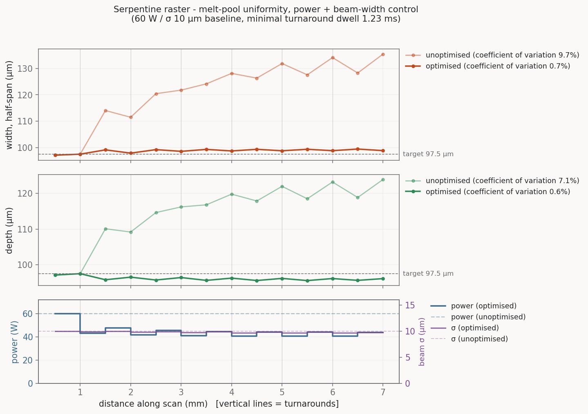
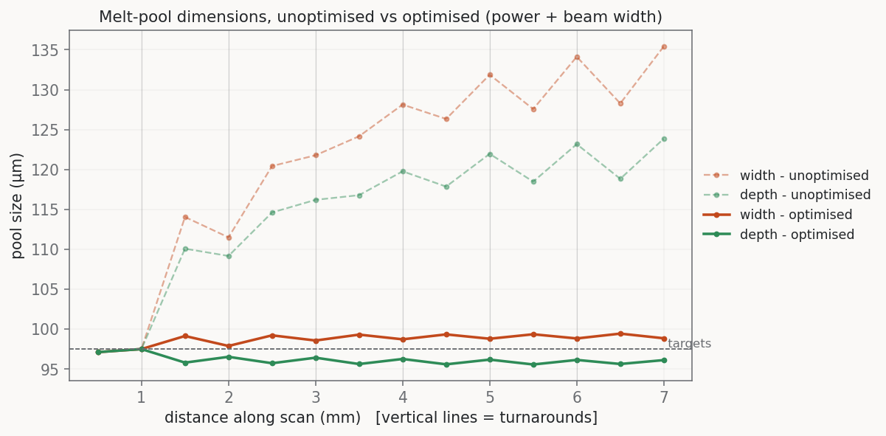

Serpentine raster: holding the melt pool steady with power and beam width
The simplest raster — scan left→right, hop up one hatch (0.15 mm),
scan right→left, seven lines over a 1 mm square at 0.7 m/s —
with per-segment laser power and lateral beam width
(σ) as the controls. Each turnaround uses the
minimal dwell, 1.23 ms: the shortest beam-off pause for
which the previous track's melt has fully solidified before the next track
starts. Any less and the pool at track starts merges with still-liquid
neighbour residue that no control value can remove; much more and the tracks
decouple, leaving nothing to optimise. The uniformity target is the
developed single-track pool (97.5 µm, the steady
line-0 pool on cold ground) — a target the controlled process can actually
sustain everywhere, unlike heat-soaked mid-scan pools.
Unoptimised run — constant 60 W

Left: top-down surface temperature over the square, with the
scan plan, the beam (blue dot) and the melt contour (white, 1733 K).
Right: the y–z cross-section at the beam, with the beam Gaussian
sketched above the surface — during turnaround dwells the beam switches off
and the residue visibly decays. Bottom: the running width/depth trace. As
background heat accumulates, width grows from 97 µm to
135 µm and depth from 97 µm to 124 µm,
with a within-line sawtooth as each track starts smaller on post-dwell
ground and swells toward the line end.
Optimised run — the control schedule in action

The same raster driven by the optimised per-segment power and
beam-width schedule. Power falls from 60 W on the cold first line to
roughly 41–48 W as background preheat builds, while σ stays
near 9.6–10 µm. The pool cross-section holds the
97.5 µm developed-single-track target — compare the flat
width/depth traces with the climbing ones above.
Width and depth, unoptimised vs optimised

Per-segment melt-pool width (half-span) and depth along the
scan, before and after power + beam-width optimisation, with the control
schedules that produced the optimised traces. The optimiser is a sequential
per-segment Newton solve in scaled control coordinates, using exact OTI
derivatives and accepting only residual-decreasing backtracked steps
(~3.5 sims/segment). Width CV drops 9.7 % → 0.7 %, depth CV
7.1 % → 0.6 %.
All dimensions on one axes

The same data overlaid: dashed = unoptimised, solid = optimised,
orange = width, green = depth. The unoptimised traces drift upward line after
line; the optimised traces sit on the target (97.5 µm, the
developed single-track pool) to within a few microns for the whole scan.
Reproduce with find_min_dwell.py →
run_baseline.py → run_optimized.py →
make_animation.py / make_plots.py in
melt_pool_demos/raster/; details in README.md.